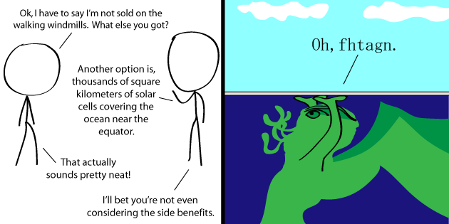

Comic JK 706
When I Feel Like It
⇤
<
?
>
⇥

⇤
<
?
>
⇥
Forum
.
RSS
.
Digg
.
Facebook
.
Reddit
.
Twitter
.
Stumbleupon
Enter your thoughts on number 706 here. Please, no spamming, trolling, phreaking, or summoning the Great Old Ones. The green thing looks very much like your mother. fhtagn = ****? >No, fhtagn is much, much worse. >Comes from the chant that calls forth Cthulu: "P****** m******* C****** R**** w******* fhtagn" >>Are you sure it's a good idea to recite that here? >>>censored (not safe for earth) >>>>thank you! sorry, we need the phytoplankton for oxygen and cartoon villains >I suggest the Sahara. Hardly anything alive to worry about, and we don't annoy dark deities of insanity. Side benefit - the waste heat can be used in desalination systems to create artificial oases throughout the desert. Given that solar panels aren't exactly sturdy, at least not sufficient to block Cthulu, and the unlikelyhood of Cthulu being real and awakening, and the importance of phytoplankton, the desert seems a much better option. I imagine the solar cells would be tied together with a rope/wire so it can flex with the ocean, and large enough gaps between them so larger waves would be able to flow over them. A single large flat sheet on the ocean would definitely crack/shatter. that ought to keep Cthulu at bay! > It's supposed to keep Cthulhu away from the bays! ;-) >> AW YEAH I had to look up Google images on Cthulu (or Ktulu for us Metallica fans)to figure out the picture. > Son, I am disappoint. >>Why does Cthulu have wings if he lives underwater? >>>Same reason penguins do. >>>>Except penguins don't live underwater. And also it's not really the same reason at all. >>>>>Actually, just because He thinks it looks cool (also, they're probably helpful for swimming)